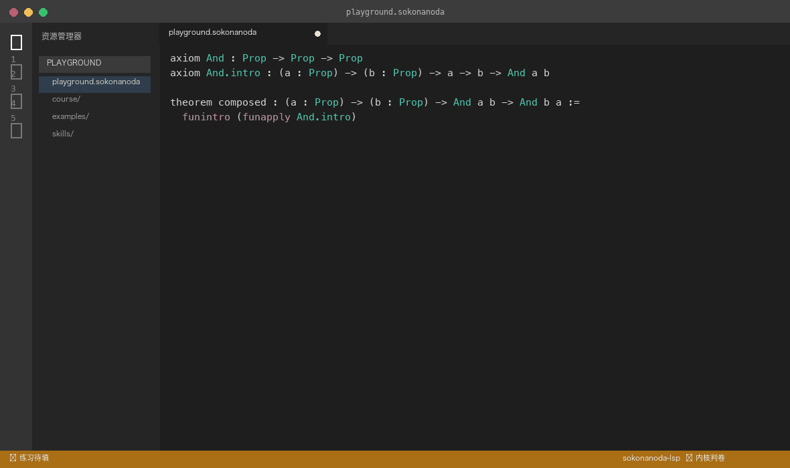
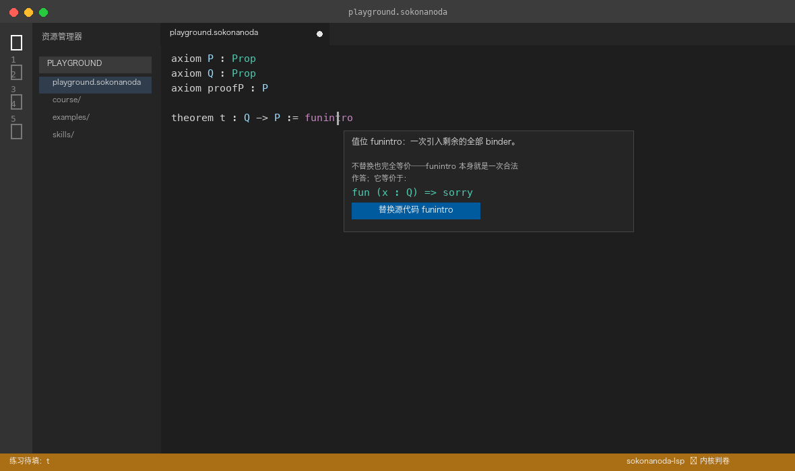

A self-contained Lean-4-style teaching compiler: every proof is graded
by a real kernel, the editor hints while you type, and code agents can
drive the whole loop. One VS Code extension — no toolchain required.
Prefer a pinned version? Grab the VSIX for your platform from
GitHub Releases
— the extension bundles its own LSP and CLI binaries,
no Rust, Lean or any toolchain needed.
Clone the repository (skills/ and the AGENTS.md
entry point come with it):
git clone https://github.com/ColorlessBoy/sokonanoda-lang
cd sokonanoda-lang
opencode picks the skills up automatically; for other agents, copy them
into your skill directory:
cp -r skills/* /path/to/your/agent/skills/
Point your agent at AGENTS.md:
sokonanoda-teacher runs the teaching loop,
sokonanoda-dev develops the compiler,
sokonanoda-ci ships and watches CI. Grading is
driven through the --json event stream.
One command prepares the environment: sokonanoda setup
(version-locked CLI + LSP download, cross-platform).
See it in action
Four moments people hit first. Everything shown exists in the extension.
Completion from keystroke one
Type funintro in the value position: the popup preselects the
“replace source” item from the first character; once the argument
compiles, the same item upgrades to a full skeleton replacement.

The keywords compose
funintro (funapply And.intro): funintro turns the remaining
binders into a fun chain, funapply points the proof at the final goal and
leaves its premises as typed holes. The kernel grades the result.

Hover to understand, click to expand
Hover a keyword to see its expansion and remaining goal; the
“replace source” button applies the same edit as Tab completion.
The kernel decides
Grading always goes through the real kernel — no text matching. A wrong
proof gets a diagnostic with a teaching hint; a correct one is valid
Lean, verbatim.